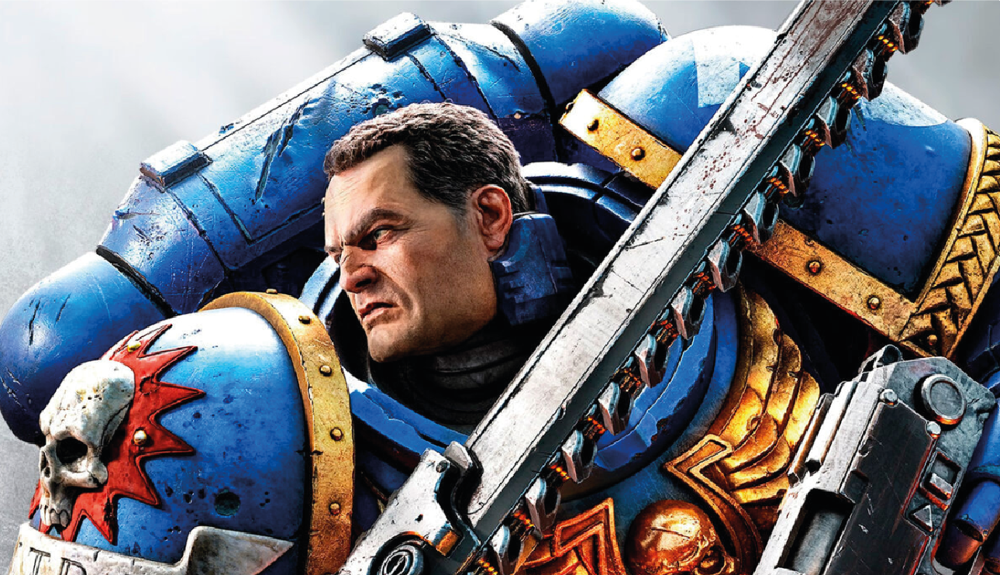

Warhammer 40,000: Space Marine 2 muestra un nuevo vistazo a su gameplay
El juego de acción llega este año y Focus Entertainment presenta un vídeo con jugabilidad de la esperada secuela de Space Marine.
Focus Entertainment y la desarrolladora Saber Interactive han mostrado un nuevo vídeo de Warhammer 40,000: Space Marine 2 con un minuto de gameplay. El título de acción está previsto en PlayStation 5, Xbox Series y PC para 2023, sin una fecha más concreta.
"La galaxia corre peligro. Es el fin numerosos planetas. El Imperio te necesita", dice su historia. "Despliega las habilidades sobrehumanas y la brutalidad de un Marine Espacial, el mejor cuerpo de guerreros del Emperador. Aprovecha tus capacidades mortíferas y un arsenal devastador para acabar con las implacables hordas del enemigo. Aplaca los horrores de la galaxia en épicas batallas sobre planetas remotos. Descubre misterios oscuros y pon freno a la noche eterna para demostrar tu fidelidad".
El equipo destaca que Space Marine regresa con una experiencia de mucha acción en el universo Warhammer 40,000 con la participación del actor Clive Standen (Vikings, Taken) en el papel del Titus, Capitán del Capítulo de Marines Espaciales Ultramarines y Comandante de su 2ª Compañía. "Podrás encontrar un juego rápido y fluido con la mejor experiencia de Saber Interactive, el equipo y la tecnología de World War Z".
Secuela de un juego muy querido
Warhammer 40.000: Space Marine se lanzó en septiembre de 2011 para Xbox 360, PlayStation 3 y PC. La recepción de la crítica especializada fue tibia y no funcionó especialmente bien en ventas, pero su propuesta de Gears of War aún más sangriento y frenético cautivó a algunos sectores. Aquel título estaba desarrollado por Relic Entertainment (Company of Heroes, Age of Empires IV).
Recientemente os hablamos de las virtudes del original: "Aunque Relic jamás ocultó los parecidos con Gears of War, sí es cierto que se intentaba diferenciar a sendos juegos con pequeños detalles [...]. Quedaba claro que Space Marine iba a ser un TPS de distancias muy cortas y con combates que te pondrían en apuros constantemente"